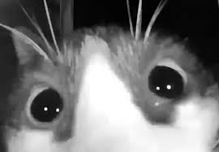

Los Gatos Domésticos

Hace click para ver mas imagenes
Los gatos domésticos, también conocidos como felis catus, son mascotas populares en todo el mundo. Son animales independientes y cariñosos. Algunas características comunes de los gatos incluyen:
- Pelaje: Los gatos pueden tener pelajes variados, como corto, largo, rizado o sin pelo.
- Comportamiento: Son cazadores naturales y les encanta jugar con juguetes como ratones de peluche o bolas de lana.
- Ronroneo: Los gatos ronronean cuando están contentos o relajados.
Razas de Gatos
Existen muchas razas de gatos, cada una con sus propias características distintivas:
- Siameses: Con pelaje corto y ojos azules intensos.
- Maine Coon: Son grandes y peludos, conocidos como los "gigantes amables".
- Persas: Tienen un pelaje largo y una cara achatada.
- Bengalíes: Tienen un pelaje moteado similar al de los leopardos.
Cuidado de los Gatos
Para cuidar bien a los gatos:
- Alimentación: Los gatos necesitan una dieta equilibrada con proteínas y vitaminas.
- Higiene: Debes cepillar su pelaje regularmente y
recortar sus uñas. - Visitas al Veterinario: Es importante llevar a tu gato al veterinario para chequeos regulares y vacunas.
Curiosidades sobre los Gatos
Algunos datos interesantes sobre los gatos:
- Son saltadores expertos: Pueden salta r hasta cinco veces su altura.
- Son más activos durante la noche debido a su naturaleza cazadora.
- Sus bigotes son sensibles y les ayudan a detectar movimientos.
Cosas que los gatos aman
- Menta para gatos
- Punteros laser
- Lasaña
Cosas que los gatos odian
- Tratamiento antipulgas
- Truenos
- Otros gatos
Que prefiere tu gato ?
Mas fotos de gatos